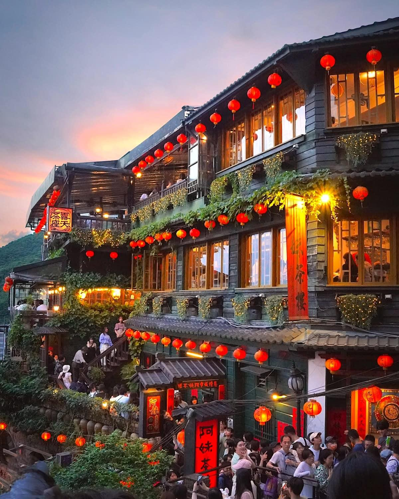
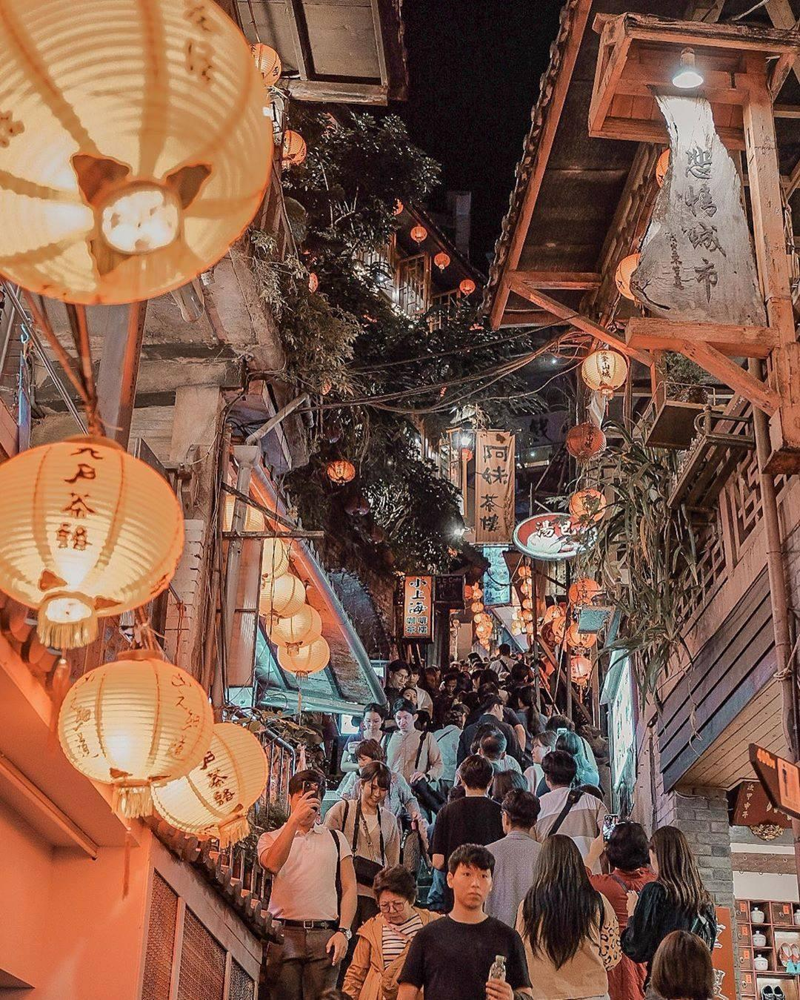

台灣5天4夜這樣玩
5 DAYS IN TAIWAN TRAVEL GUIDE
北海岸 × 九份 × 在地人推薦隱藏美食
DAY 1｜台北城市經典
第一天先從台北最經典的地標開始。
【台北101】登高看整個城市輪廓，白天夜晚各有氛圍。
【自由廣場】感受台灣指標性建築與空間尺度。
【西門町】晚上一定要來，街頭文化、潮流、珍奶全在這裡。
Start your journey in Taipei with iconic landmarks.
Taipei 101, Liberty Square, and Ximending nightlife.
💬 旅客心得：
「西門町晚上真的很熱鬧」
「101夜景很值得上去一次」
DAY 2｜北海岸絕美海景路線
第二天直接衝北海岸，一路都是風景。
【野柳女王頭】世界級地質奇景，來台必看。
【金山老街】中午吃鴨肉＋在地小吃。
【淡水漁人碼頭】傍晚看夕陽，氣氛直接拉滿。
Explore Taiwan’s north coast.
Yehliu, Jinshan Old Street, and Tamsui sunset.
💬 旅客心得：
「淡水夕陽真的超美」
「金山鴨肉很有台灣味」

DAY 3｜九份山城浪漫
第三天把節奏放慢，走進九份山城。
燈籠階梯、茶樓、山海景交錯，
隨便走都像電影場景。
可以慢慢逛、慢慢拍，
感受那種介於觀光與在地生活之間的節奏。
走累了，也很適合找間小店坐下來，
邊吃點甜品，邊看山景放空一下。
 現場實拍
現場實拍
阿甘姨芋圓在網路上也有不少實拍影片，
很多人都是看完分享後，實際走到九份才來吃。
🚴 DAY 4｜雪花冰+新月橋夜騎腳踏車
🍧
在地人推薦｜新莊甜品
第四天回到台北，安排一個比較輕鬆的行程。
白天可以在新莊附近走走，
傍晚到新月橋騎腳踏車，看夕陽慢慢變成夜景。
如果想找個地方坐下來休息，
在地人也會推薦幾間不錯的甜品店。
像是夏雪覓境這類雪花冰店，
環境舒服、份量也夠，很適合當作行程中的休息點。
 必吃推薦
必吃推薦
💬 網友怎麼說：
「份量很大，兩個人吃剛剛好」
「比觀光區冰店更值得來」
「環境舒服會想再訪」
現場實拍
這間店在 Facebook 上有不少實拍影片，
很多人都是看到影片後特地來吃。
🍉
真正的水果雪花冰
這裡的雪花冰，不只是甜。
選用新鮮水果現打成果汁，
直接製成冰磚，再細緻刨出。
每一口，都是水果本身的香氣，
與自然的甜度，剛剛好的好滋味，
沒有多餘添加，只有單純好吃。
×


DAY 5｜大稻埕與旅程收尾
最後一天留給台北最有味道的老街。
【大稻埕迪化街】文創＋老店混合的氛圍。
可以買鳳梨酥、茶葉、伴手禮。
慢慢走、慢慢逛，讓這趟旅程收得剛剛好。
End your trip at Dihua Street.
A mix of tradition, culture, and local souvenirs.
💬 旅客心得：
「這裡很適合最後一天慢慢逛」
「很好買伴手禮」